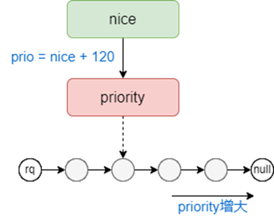
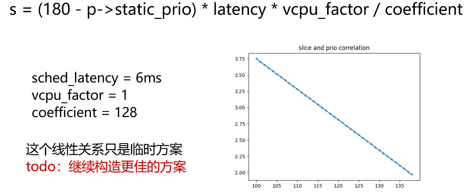
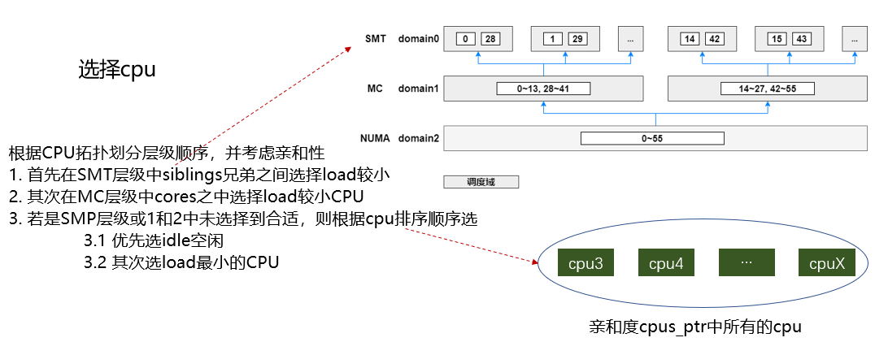
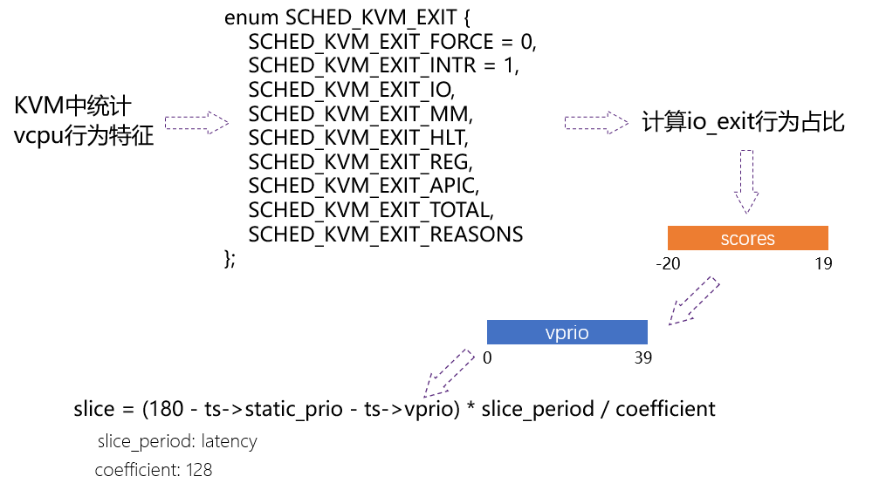
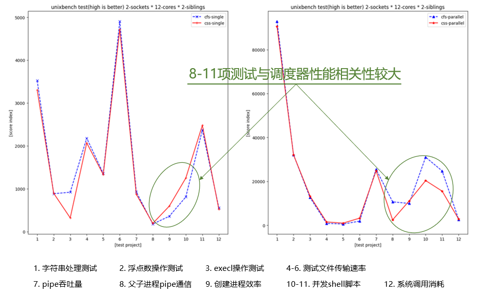
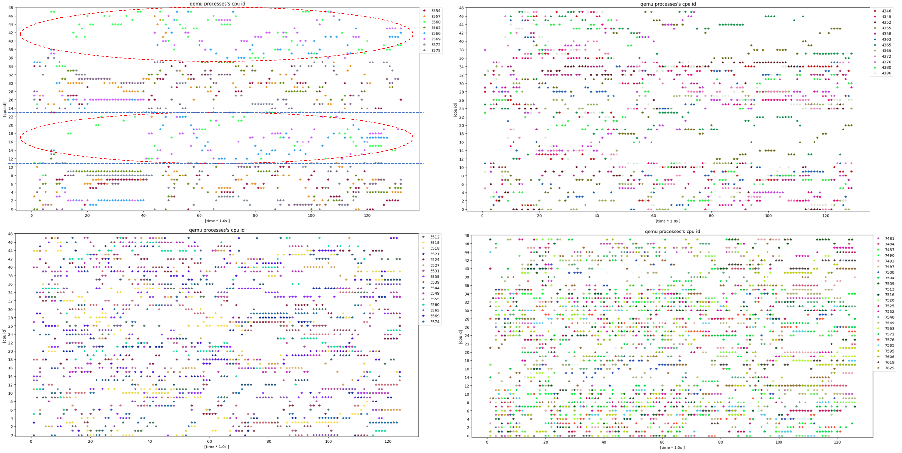
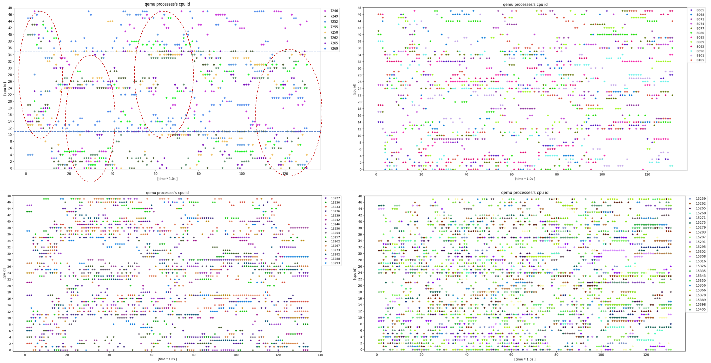
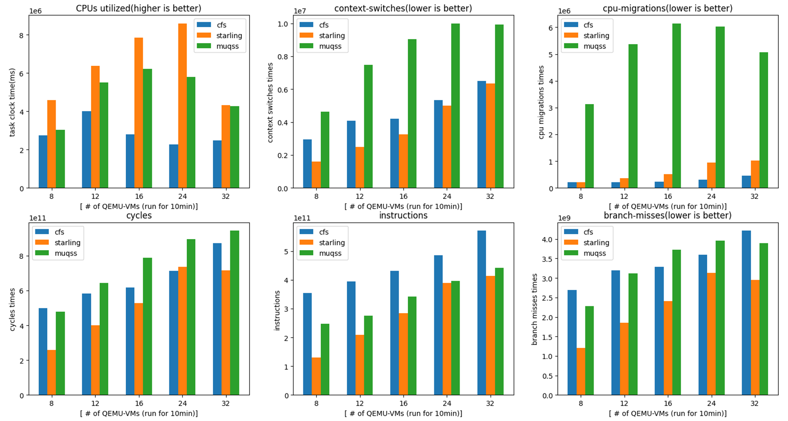

Sparrow Scheduler
麻雀调度器
1. 项目仓库
源码地址，https://gitee.com/jrglinux/sparrow-scheduler.git
2. 项目简介
一个适用于Linux内核可替代CFS调度器的简约调度器。具有"身体虽小五脏俱全"的特点，因此我给它取名 "麻雀"调度器 -- sparrow scheduler。
核心目标：
针对多核CPU（一般超过48核）的云主机服务器端的内核调度器。
更少的load balance，带来更少的进程迁移、避免浪费资源。
优化Linux中CFS的原有逻辑，去除冗余的计算和算法累赘，回归调度本身。
可替代CFS，简化调优参数、策略等，同时性能还提升，优秀的用户友好性。
3. 设计准则
3.1 准则
与Linux kernel现有的CFS调度器相比，本项目在以下方便有优化：
- 精减优先级与队列排序关系
- 队列组织结构采用skip-list跳跃表替换红黑树
- 新增CSS调度器，与CFS可并存作用
- 简化时间片与优先级的关系，呈强相关性
- 精简抢占与惩罚机制
- 主调度过程：任务选择、任务入队、任务出队、让出CPU、唤醒选择CPU
- 周期性调度：判断时间片检查抢占
- 精减负载均衡：rq的load评判、动态balance过程简化
- vcpu偏心调度系统：针对云桌面虚拟化场景的优化
3.2 priority

3.3 timeslice

3.4 select task cpu

3.5 vcpu priority

4. 性能实测
4.1 benchmark

4.2 load balance
环境：48核主机，qemu虚机配置1G内存1个vCPU，虚机启动后自动化任务跑满vCPU，host端采样vCPU在物理CPU上的散点分布图，持续采样约10min。
4.2.1 SMT层级

4.2.2 MC层级

4.3 performance
环境：48核，qemu虚机配置1G内存1个vCPU，虚机启动后自动化任务跑满vCPU，perf采样context switch、cycles、branch-misses、CPUs utillized等，持续采样约10min。

5. 项目演进
【Todo】
- 调度器本身的优化精简
- skiplist结构的再精减，比如时间复杂度降到log logN
- nice值与优先级以及队列组织的关系，曲线拟合
- 更好的CPU选择机制、更高效率的load balance
- 容器化、任务实时性、集群调度等的支持与优化
- ……
- 云桌面虚拟化场景创新
- vcpu线程偏心调度系统优化
- vcpu-core协同调度的优化适配
- kvm虚机行为特征滑动窗口式统计
- 针对虚机行为特征的反馈式实时调度
- ……